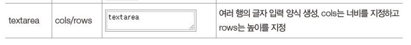
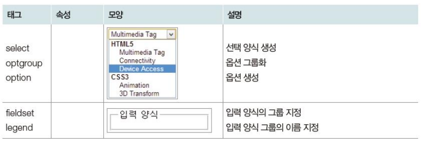
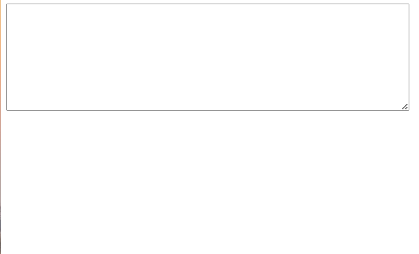
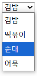
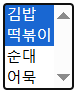
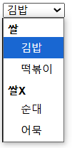
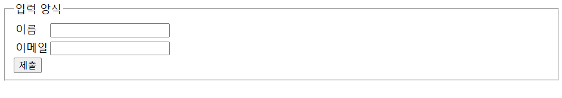

이번 장에서는 textarea 태그와 선택 태그, 입력양식 그룹 태그에 대해 알아본다.


textarea는 여러 줄의 글자를 입력할 수 있는 영역을 만든다.
cols 속성은 한 행에 입력할 수 있는 글자 수이고
row 속성은 몇 행인지를 나타낸다.
<!--입력 양식 태그2-->
<!DOCTYPE html>
<html>
<head>
<title>입력 양식 태그2</title>
</head>
<body>
<textarea cols="80" rows="10"></textarea>
</body>
</html>

select 태그에 대해 알아보자.
select 태그는 선택 양식을 만든다.
select 태그 내부에 option 태그를 넣는다.
option 태그는 옵션을 생성한다.
<!--입력 양식 태그2-->
<!DOCTYPE html>
<html>
<head>
<title>입력 양식 태그2</title>
</head>
<body>
<br>
<select>
<option>김밥</option>
<option>떡볶이</option>
<option>순대</option>
<option>어묵</option>
</select>
<select multiple>
<option>김밥</option>
<option>떡볶이</option>
<option>순대</option>
<option>어묵</option>
</select>
<select>
<optgroup label="쌀">
<option>김밥</option>
<option>떡볶이</option>
</optgroup>
<optgroup label="쌀X">
<option>순대</option>
<option>어묵</option>
</optgroup>
</select>
<br>
</body>
</html>



select에 multiple 속성을 넣으면 여러개를 선택할 수 있다.
그리고 option들을 optgroup으로 묶어서 옵션들을 그룹화할 수 있다.
다음으로 관련된 입력양식들을 하나로 묶는 방법을 알아보자.
fieldset 태그로 감싸면 외곽선을 만든다.
그리고 fieldset 태그 안에 legend 태그를 만들어서 그룹의 이름을 표시할 수 있다.
<!--입력 양식 태그2-->
<!DOCTYPE html>
<html>
<head>
<title>입력 양식 태그2</title>
</head>
<body>
<form>
<fieldset>
<legend>입력 양식</legend>
<table>
<tr>
<td><label for="name">이름</label></td>
<td><input id="naem" type="text"></td>
</tr>
<tr>
<td><label for="mail">이메일</label></td>
<td><input id="mail" type="email"></td>
</tr>
</table>
<input type="submit">
</fieldset>
</form>
</body>
</html>
